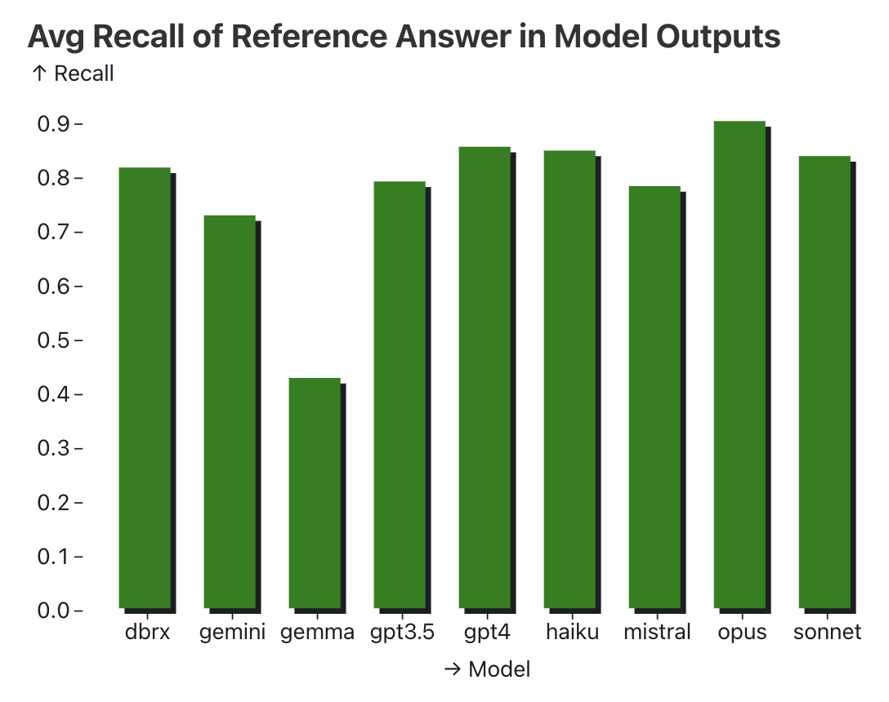
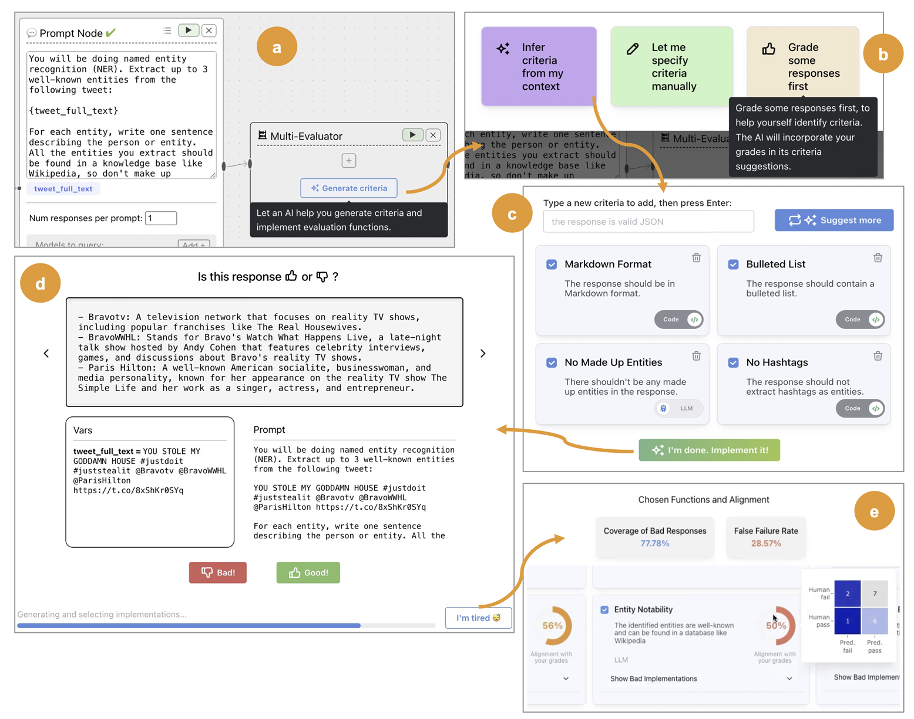

What We’ve Learned From A Year of Building with LLMs
It’s an exciting time to build with large language models (LLMs). Over the past year, LLMs have become “good enough” for real-world applications. And they’re getting better and cheaper every year. Coupled with a parade of demos on social media, there will be an estimated $200B investment in AI by 2025. Furthermore, provider APIs have made LLMs more accessible, allowing everyone, not just ML engineers and scientists, to build intelligence into their products. Nonetheless, while the barrier to entry for building with AI has been lowered, creating products and systems that are effective—beyond a demo—remains deceptively difficult.
We’ve spent the past year building, and have discovered many sharp edges along the way. While we don’t claim to speak for the entire industry, we’d like to share what we’ve learned to help you avoid our mistakes and iterate faster. These are organized into three sections:
- Tactical: Some practices for prompting, RAG, flow engineering, evals, and monitoring. Whether you’re a practitioner building with LLMs, or hacking on weekend projects, this section was written for you.
- Operational: The organizational, day-to-day concerns of shipping products, and how to build an effective team. For product/technical leaders looking to deploy sustainably and reliably.
- Strategic: The long-term, big-picture view, with opinionated takes such as “no GPU before PMF” and “focus on the system not the model”, and how to iterate. Written with founders and executives in mind.
Our intent is to make this a practical guide to building successful products with LLMs, drawing from our own experiences and pointing to examples from around the industry.
Ready to delve dive in? Let’s go.
Tactical: Nuts & bolts of working with LLMs
In this section, we share some best practices for the core components of the emerging LLM stack: prompting tips to improve quality and reliability, evaluation strategies to assess output, retrieval-augmented generation ideas to improve grounding, and more. We’ll also explore how to design human-in-the-loop workflows. While the technology is still rapidly developing, we hope that these lessons, the by-product of countless experiments we’ve collectively run, will stand the test of time and help you build and ship robust LLM applications.
Prompting
We recommend starting with prompting when developing new applications. It’s easy to both underestimate and overestimate its importance. It’s underestimated because the right prompting techniques, when used correctly, can get us very far. It’s overestimated because even prompt-based applications require significant engineering around the prompt to work well.
Focus on getting the most out of fundamental prompting techniques
A few prompting techniques have consistently helped with improving performance across a variety of models and tasks: n-shot prompts + in-context learning, chain-of-thought, and providing relevant resources.
The idea of in-context learning via n-shot prompts is to provide the LLM with a few examples that demonstrate the task and align outputs to our expectations. A few tips: - If n is too low, the model may over-anchor on those specific examples, hurting its ability to generalize. As a rule of thumb, aim for n ≥ 5. Don’t be afraid to go as high as a few dozen. - Examples should be representative of the expected input distribution. If you’re building a movie summarizer, include samples from different genres in roughly the same proportion you’d expect to see in practice. - You don’t necessarily need to provide the full input-output pairs. In many cases, examples of desired outputs are sufficient. - If using an LLM which supports tool use, your n-shot examples should also use the tools you want the agent to use.
In Chain-of-Thought (CoT) prompting, we encourage the LLM to explain its thought process before returning the final answer. Think of it as providing the LLM with a sketchpad so it doesn’t have to do it all in memory. The original approach was to simply add the phrase “Let’s think step-by-step” as part of the instructions, but, we’ve found it helpful to make the CoT more specific, where adding specificity via an extra sentence or two often reduces hallucination rates significantly. For example, when asking an LLM to summarize a meeting transcript, we can be explicit about the steps, such as: - First, list out the key decisions, follow-up items, and associated owners in a sketchpad. - Then, check that the details in the sketchpad are factually consistent with the transcript. - Finally, synthesize the key points into a concise summary.
Note that in recent times, some doubt has been cast on if this technique is as powerful as believed. Additionally, there’s significant debate as to exactly what is going on during inference when Chain-of-Thought is being used. Regardless, this technique is one to experiment with when possible.
Providing relevant resources is a powerful mechanism to expand the model’s knowledge base, reduce hallucinations, and increase the user’s trust. Often accomplished via Retrieval Augmented Generation (RAG), providing the model with snippets of text that it can directly utilize in its response is an essential technique. When providing the relevant resources, it’s not enough to merely include them; don’t forget to tell the model to prioritize their use, refer to them directly, and sometimes to mention when none of the resources are sufficient. These help “ground” agent responses to a corpus of resources.
Structure your inputs and outputs
Structured input and output help models better understand the input as well as return output that can reliably integrate with downstream systems. Adding serialization formatting to your inputs can help provide more clues to the model as to the relationships between tokens in the context, additional metadata to specific tokens (like types), or relate the request to similar examples in the model’s training data.
As an example, many questions on the internet about writing SQL begin by specifying the SQL schema. Thus, you may expect that effective prompting for Text-to-SQL should include structured schema definitions; indeed
Structured output serves a similar purpose, but it also simplifies integration into downstream components of your system. Instructor and Outlines work well for structured output. (If you’re importing an LLM API SDK, use Instructor; if you’re importing Huggingface for a self-hosted model, use Outlines.) Structured input expresses tasks clearly and resembles how the training data is formatted, increasing the probability of better output.
When using structured input, be aware that each LLM family has their own preferences. Claude prefers <xml> while GPT favors Markdown and JSON. With XML, you can even pre-fill Claude’s responses by providing a <response> tag like so.
messages=[
{
"role": "user",
"content": """Extract the <name>, <size>, <price>, and <color> from this product description into your <response>.
<description>The SmartHome Mini is a compact smart home assistant available in black or white for only $49.99. At just 5 inches wide, it lets you control lights, thermostats, and other connected devices via voice or app—no matter where you place it in your home. This affordable little hub brings convenient hands-free control to your smart devices.
</description>"""
},
{
"role": "assistant",
"content": "<response><name>"
}
]Have small prompts that do one thing, and only one thing, well
A common anti-pattern / code smell in software is the “God Object”, where we have a single class or function that does everything. The same applies to prompts too.
A prompt typically starts simple: A few sentences of instruction, a couple of examples, and we’re good to go. But as we try to improve performance and handle more edge cases, complexity creeps in. More instructions. Multi-step reasoning. Dozens of examples. Before we know it, our initially simple prompt is now a 2,000 token frankenstein. And to add injury to insult, it has worse performance on the more common and straightforward inputs! GoDaddy shared this challenge as their No. 1 lesson from building with LLMs.
Just like how we strive (read: struggle) to keep our systems and code simple, so should we for our prompts. Instead of having a single, catch-all prompt for the meeting transcript summarizer, we can break it into steps to: - Extract key decisions, action items, and owners into structured format - Check extracted details against the original transcription for consistency - Generate a concise summary from the structured details
As a result, we’ve split our single prompt into multiple prompts that are each simple, focused, and easy to understand. And by breaking them up, we can now iterate and eval each prompt individually.
Craft your context tokens
Rethink, and challenge your assumptions about how much context you actually need to send to the agent. Be like Michaelangelo, do not build up your context sculpture – chisel away the superfluous material until the sculpture is revealed. RAG is a popular way to collate all of the potentially relevant blocks of marble, but what are you doing to extract what’s necessary?
We’ve found that taking the final prompt sent to the model – with all of the context construction, and meta-prompting, and RAG results – putting it on a blank page and just reading it, really helps you rethink your context. We have found redundancy, self-contradictory language, and poor formatting using this method.
The other key optimization is the structure of your context. Your bag-of-docs representation isn’t helpful for humans, don’t assume it’s any good for agents. Think carefully about how you structure your context to underscore the relationships between parts of it, and make extraction as simple as possible.
Information Retrieval / RAG
Beyond prompting, another effective way to steer an LLM is by providing knowledge as part of the prompt. This grounds the LLM on the provided context which is then used for in-context learning. This is known as retrieval-augmented generation (RAG). Practitioners have found RAG effective at providing knowledge and improving output, while requiring far less effort and cost compared to finetuning. RAG is only as good as the retrieved documents’ relevance, density, and detail
The quality of your RAG’s output is dependent on the quality of retrieved documents, which in turn can be considered along a few factors
The first and most obvious metric is relevance. This is typically quantified via ranking metrics such as Mean Reciprocal Rank (MRR) or Normalized Discounted Cumulative Gain (NDCG). MRR evaluates how well a system places the first relevant result in a ranked list while NDCG considers the relevance of all the results and their positions. They measure how good the system is at ranking relevant documents higher and irrelevant documents lower. For example, if we’re retrieving user summaries to generate movie review summaries, we’ll want to rank reviews for the specific movie higher while excluding reviews for other movies.
Like traditional recommendation systems, the rank of retrieved items will have a significant impact on how the LLM performs on downstream tasks. To measure the impact, run a RAG-based task but with the retrieved items shuffled—how does the RAG output perform?
Second, we also want to consider information density. If two documents are equally relevant, we should prefer one that’s more concise and has lesser extraneous details. Returning to our movie example, we might consider the movie transcript and all user reviews to be relevant in a broad sense. Nonetheless, the top-rated reviews and editorial reviews will likely be more dense in information.
Finally, consider the level of detail provided in the document. Imagine we’re building a RAG system to generate SQL queries from natural language. We could simply provide table schemas with column names as context. But, what if we include column descriptions and some representative values? The additional detail could help the LLM better understand the semantics of the table and thus generate more correct SQL.
Don’t forget keyword search; use it as a baseline and in hybrid search
Given how prevalent the embedding-based RAG demo is, it’s easy to forget or overlook the decades of research and solutions in information retrieval.
Nonetheless, while embeddings are undoubtedly a powerful tool, they are not the be all and end all. First, while they excel at capturing high-level semantic similarity, they may struggle with more specific, keyword-based queries, like when users search for names (e.g., Ilya), acronyms (e.g., RAG), or IDs (e.g., claude-3-sonnet). Keyword-based search, such as BM25, are explicitly designed for this. And after years of keyword-based search, users have likely taken it for granted and may get frustrated if the document they expect to retrieve isn’t being returned.
Vector embeddings do not magically solve search. In fact, the heavy lifting is in the step before you re-rank with semantic similarity search. Making a genuine improvement over BM25 or full-text search is hard. — Aravind Srinivas, CEO Perplexity.ai
We’ve been communicating this to our customers and partners for months now. Nearest Neighbor Search with naive embeddings yields very noisy results and you’re likely better off starting with a keyword-based approach. — Beyang Liu, CTO Sourcegraph
Second, it’s more straightforward to understand why a document was retrieved with keyword search—we can look at the keywords that match the query. In contrast, embedding-based retrieval is less interpretable. Finally, thanks to systems like Lucene and OpenSearch that have been optimized and battle-tested over decades, keyword search is usually more computationally efficient.
In most cases, a hybrid will work best: keyword matching for the obvious matches, and embeddings for synonyms, hypernyms, and spelling errors, as well as multimodality (e.g., images and text). Shortwave shared how they built their RAG pipeline, including query rewriting, keyword + embedding retrieval, and ranking.
Prefer RAG over fine-tuning for new knowledge
Both RAG and fine-tuning can be used to incorporate new information into LLMs and increase performance on specific tasks. Thus, which should we try first?
Recent research suggests that RAG may have an edge. One study compared RAG against unsupervised finetuning (aka continued pretraining), evaluating both on a subset of MMLU and current events. They found that RAG consistently outperformed fine-tuning for knowledge encountered during training as well as entirely new knowledge. In another paper, they compared RAG against supervised finetuning on an agricultural dataset. Similarly, the performance boost from RAG was greater than fine-tuning, especially for GPT-4 (see Table 20 of the paper).
Beyond improved performance, RAG comes with several practical advantages too. First, compared to continuous pretraining or fine-tuning, it’s easier—and cheaper!—to keep retrieval indices up-to-date. Second, if our retrieval indices have problematic documents that contain toxic or biased content, we can easily drop or modify the offending documents.
In addition, the R in RAG provides finer grained control over how we retrieve documents. For example, if we’re hosting a RAG system for multiple organizations, by partitioning the retrieval indices, we can ensure that each organization can only retrieve documents from their own index. This ensures that we don’t inadvertently expose information from one organization to another.
Long-context models won’t make RAG obsolete
With Gemini 1.5 providing context windows of up to 10M tokens in size, some have begun to question the future of RAG.
I tend to believe that Gemini 1.5 is significantly overhyped by Sora. A context window of 10M tokens effectively makes most of existing RAG frameworks unnecessary — you simply put whatever your data into the context and talk to the model like usual. Imagine how it does to all the startups / agents / langchain projects where most of the engineering efforts goes to RAG 😅 Or in one sentence: the 10m context kills RAG. Nice work Gemini — Yao Fu
While it’s true that long contexts will be a game-changer for use cases such as analyzing multiple documents or chatting with PDFs, the rumors of RAG’s demise are greatly exaggerated.
First, even with a context window of 10M tokens, we’d still need a way to select information to feed into the model. Second, beyond the narrow needle-in-a-haystack eval, we’ve yet to see convincing data that models can effectively reason over such a large context. Thus, without good retrieval (and ranking), we risk overwhelming the model with distractors, or may even fill the context window with completely irrelevant information.
Finally, there’s cost. The Transformer’s inference cost scales quadratically (or linearly in both space and time) with context length. Just because there exists a model that could read your organization’s entire Google Drive contents before answering each question doesn’t mean that’s a good idea. Consider an analogy to how we use RAM: we still read and write from disk, even though there exist compute instances with RAM running into the tens of terabytes.
So don’t throw your RAGs in the trash just yet. This pattern will remain useful even as context windows grow in size.
Tuning and optimizing workflows
Prompting an LLM is just the beginning. To get the most juice out of them, we need to think beyond a single prompt and embrace workflows. For example, how could we split a single complex task into multiple simpler tasks? When is finetuning or caching helpful with increasing performance and reducing latency/cost? In this section, we share proven strategies and real-world examples to help you optimize and build reliable LLM workflows.
Step-by-step, multi-turn “flows” can give large boosts
We already know that by decomposing a single big prompt into multiple smaller prompts, we can achieve better results. An example of this is AlphaCodium: By switching from a single prompt to a multi-step workflow, they increased GPT-4 accuracy (pass@5) on CodeContests from 19% to 44%. The workflow includes: - Reflecting on the problem - Reasoning on the public tests - Generating possible solutions - Ranking possible solutions - Generating synthetic tests - Iterating on the solutions on public and synthetic tests.
Small tasks with clear objectives make for the best agent or flow prompts. It’s not required that every agent prompt requests structured output, but structured outputs help a lot to interface with whatever system is orchestrating the agent’s interactions with the environment.
Some things to try: - An explicit planning step, as tightly specified as possible. Consider having predefined plans to choose from. - Rewriting the original user prompts into agent prompts. Be careful, this process is lossy! - Agent behaviors as linear chains, DAGs, and State-Machines; different dependency and logic relationships can be more and less appropriate for different scales. Can you squeeze performance optimization out of different task architectures? - Planning validations; your planning can include instructions on how to evaluate the responses from other agents to make sure the final assembly works well together. - Prompt engineering with fixed upstream state—make sure your agent prompts are evaluated against a collection of variants of what may happen before.
Prioritize deterministic workflows for now
While AI agents can dynamically react to user requests and the environment, their non-deterministic nature makes them a challenge to deploy. Each step an agent takes has a chance of failing, and the chances of recovering from the error are poor. Thus, the likelihood that an agent completes a multi-step task successfully decreases exponentially as the number of steps increases. As a result, teams building agents find it difficult to deploy reliable agents.
A promising approach is to have agent systems that produce deterministic plans which are then executed in a structured, reproducible way. In the first step, given a high-level goal or prompt, the agent generates a plan. Then, the plan is executed deterministically. This allows each step to be more predictable and reliable. Benefits include: - Generated plans can serve as few-shot samples to prompt or finetune an agent. - Deterministic execution makes the system more reliable, and thus easier to test and debug. Furthermore, failures can be traced to the specific steps in the plan. - Generated plans can be represented as directed acyclic graphs (DAGs) which are easier, relative to a static prompt, to understand and adapt to new situations.
The most successful agent builders may be those with strong experience managing junior engineers because the process of generating plans is similar to how we instruct and manage juniors. We give juniors clear goals and concrete plans, instead of vague open-ended directions, and we should do the same for our agents too.
In the end, the key to reliable, working agents will likely be found in adopting more structured, deterministic approaches, as well as collecting data to refine prompts and finetune models. Without this, we’ll build agents that may work exceptionally well some of the time, but on average, disappoint users which leads to poor retention.
Getting more diverse outputs beyond temperature
Suppose your task requires diversity in an LLM’s output. Maybe you’re writing an LLM pipeline to suggest products to buy from your catalog given a list of products the user bought previously. When running your prompt multiple times, you might notice that the resulting recommendations are too similar—so you might increase the temperature parameter in your LLM requests.
Briefly, increasing the temperature parameter makes LLM responses more varied. At sampling time, the probability distributions of the next token become flatter, meaning that tokens which are usually less likely get chosen more often. Still, when increasing temperature, you may notice some failure modes related to output diversity. For example, Some products from the catalog that could be a good fit may never be output by the LLM. The same handful of products might be overrepresented in outputs, if they are highly likely to follow the prompt based on what the LLM has learned at training time. If the temperature is too high, you may get outputs that reference nonexistent products (or gibberish!)
In other words, increasing temperature does not guarantee that the LLM will sample outputs from the probability distribution you expect (e.g., uniform random). Nonetheless, we have other tricks to increase output diversity. The simplest way is to adjust elements within the prompt. For example, if the prompt template includes a list of items, such as historical purchases, shuffling the order of these items each time they’re inserted into the prompt can make a significant difference.
Additionally, keeping a short list of recent outputs can help prevent redundancy. In our recommended products example, by instructing the LLM to avoid suggesting items from this recent list, or by rejecting and resampling outputs that are similar to recent suggestions, we can further diversify the responses. Another effective strategy is to vary the phrasing used in the prompts. For instance, incorporating phrases like “pick an item that the user would love using regularly” or “select a product that the user would likely recommend to friends” can shift the focus and thereby influence the variety of recommended products.
Caching is underrated
Caching saves cost and eliminates generation latency by removing the need to recompute responses for the same input. Furthermore, if a response has previously been guardrailed, we can serve these vetted responses and reduce the risk of serving harmful or inappropriate content.
One straightforward approach to caching is to use unique IDs for the items being processed, such as if we’re summarizing new articles or product reviews. When a request comes in, we can check to see if a summary already exists in the cache. If so, we can return it immediately; if not, we generate, guardrail, and serve it, and then store it in the cache for future requests.
For more open-ended queries, we can borrow techniques from the field of search, which also leverages caching for open-ended inputs. Features like autocomplete and spelling correction also help normalize user input and thus increase the cache hit rate.
When to finetune
We may have some tasks where even the most cleverly designed prompts fall short. For example, even after significant prompt engineering, our system may still be a ways from returning reliable, high-quality output. If so, then it may be necessary to finetune a model for your specific task.
Successful examples include: - Honeycomb’s Natural Language Query Assistant: Initially, the “programming manual” was provided in the prompt together with n-shot examples for in-context learning. While this worked decently, fine-tuning the model led to better output on the syntax and rules of the domain-specific language. - Rechat’s Lucy: The LLM needed to generate responses in a very specific format that combined structured and unstructured data for the frontend to render correctly. Fine-tuning was essential to get it to work consistently.
Nonetheless, while fine-tuning can be effective, it comes with significant costs. We have to annotate fine-tuning data, finetune and evaluate models, and eventually self-host them. Thus, consider if the higher upfront cost is worth it. If prompting gets you 90% of the way there, then fine-tuning may not be worth the investment. However, if we do decide to finetune, to reduce the cost of collecting human annotated data, we can generate and finetune on synthetic data, or bootstrap on open-source data.
Evaluation & Monitoring
Evaluating LLMs can be a minefield. The inputs and the outputs of LLMs are arbitrary text, and the tasks we set them to are varied. Nonetheless, rigorous and thoughtful evals are critical—it’s no coincidence that technical leaders at OpenAI work on evaluation and give feedback on individual evals.
Evaluating LLM applications invites a diversity of definitions and reductions: it’s simply unit testing, or it’s more like observability, or maybe it’s just data science. We have found all of these perspectives useful. In the following section, we provide some lessons we’ve learned about what is important in building evals and monitoring pipelines.
Create a few assertion-based unit tests from real input/output samples
Create unit tests (i.e., assertions) consisting of samples of inputs and outputs from production, with expectations for outputs based on at least three criteria. While three criteria might seem arbitrary, it’s a practical number to start with; fewer might indicate that your task isn’t sufficiently defined or is too open-ended, like a general-purpose chatbot. These unit tests, or assertions, should be triggered by any changes to the pipeline, whether it’s editing a prompt, adding new context via RAG, or other modifications. This write-up has an example of an assertion-based test for an actual use case.
Consider beginning with assertions that specify phrases or ideas to either include or exclude in all responses. Also consider checks to ensure that word, item, or sentence counts lie within a range. For other kinds of generation, assertions can look different. Execution-evaluation is a powerful method for evaluating code-generation, wherein you run the generated code and determine that the state of runtime is sufficient for the user-request.
As an example, if the user asks for a new function named foo; then after executing the agent’s generated code, foo should be callable! One challenge in execution-evaluation is that the agent code frequently leaves the runtime in slightly different form than the target code. It can be effective to “relax” assertions to the absolute most weak assumptions that any viable answer would satisfy.
Finally, using your product as intended for customers (i.e., “dogfooding”) can provide insight into failure modes on real-world data. This approach not only helps identify potential weaknesses, but also provides a useful source of production samples that can be converted into evals.
LLM-as-Judge can work (somewhat), but it’s not a silver bullet
LLM-as-Judge, where we use a strong LLM to evaluate the output of other LLMs, has been met with skepticism by some. (Some of us were initially huge skeptics.) Nonetheless, when implemented well, LLM-as-Judge achieves decent correlation with human judgements, and can at least help build priors about how a new prompt or technique may perform. Specifically, when doing pairwise comparisons (e.g., control vs. treatment), LLM-as-Judge typically gets the direction right though the magnitude of the win/loss may be noisy.
Here are some suggestions to get the most out of LLM-as-Judge: - Use pairwise comparisons: Instead of asking the LLM to score a single output on a Likert scale, present it with two options and ask it to select the better one. This tends to lead to more stable results. - Control for position bias: The order of options presented can bias the LLM’s decision. To mitigate this, do each pairwise comparison twice, swapping the order of pairs each time. Just be sure to attribute wins to the right option after swapping! - Allow for ties: In some cases, both options may be equally good. Thus, allow the LLM to declare a tie so it doesn’t have to arbitrarily pick a winner. - Use Chain-of-Thought: Asking the LLM to explain its decision before giving a final preference can increase eval reliability. As a bonus, this allows you to use a weaker but faster LLM and still achieve similar results. Because frequently this part of the pipeline is in batch mode, the extra latency from CoT isn’t a problem. - Control for response length: LLMs tend to bias toward longer responses. To mitigate this, ensure response pairs are similar in length.
One particularly powerful application of LLM-as-Judge is checking a new prompting strategy against regression. If you have tracked a collection of production results, sometimes you can rerun those production examples with a new prompting strategy, and use LLM-as-Judge to quickly assess where the new strategy may suffer.
Here’s an example of a simple but effective approach to iterate on LLM-as-Judge, where we simply log the LLM response, judge’s critique (i.e., CoT), and final outcome. They are then reviewed with stakeholders to identify areas for improvement. Over three iterations, agreement with human and LLM improved from 68% to 94%!

LLM-as-Judge is not a silver bullet though. There are subtle aspects of language where even the strongest models fail to evaluate reliably. In addition, we’ve found that conventional classifiers and reward models can achieve higher accuracy than LLM-as-Judge, and with lower cost and latency. For code generation, LLM-as-Judge can be weaker than more direct evaluation strategies like execution-evaluation.
The “intern test” for evaluating generations
We like to use the following “intern test” when evaluating generations: If you took the exact input to the language model, including the context, and gave it to an average college student in the relevant major as a task, could they succeed? How long would it take?
If the answer is no because the LLM lacks the required knowledge, consider ways to enrich the context.
If the answer is no and we simply can’t improve the context to fix it, then we may have hit a task that’s too hard for contemporary LLMs.
If the answer is yes, but it would take a while, we can try to reduce the complexity of the task. Is it decomposable? Are there aspects of the task that can be made more templatized?
If the answer is yes, they would get it quickly, then it’s time to dig into the data. What’s the model doing wrong? Can we find a pattern of failures? Try asking the model to explain itself before or after it responds, to help you build a theory of mind.
Overemphasizing certain evals can hurt overall performance
“When a measure becomes a target, it ceases to be a good measure.” — Goodhart’s Law.
An example of this is the Needle-in-a-Haystack (NIAH) eval. The original eval helped quantify model recall as context sizes grew, as well as how recall is affected by needle position. However, it’s been so overemphasized that it’s featured as Figure 1 for Gemini 1.5’s report. The eval involves inserting a specific phrase (“The special magic {city} number is: {number}”) into a long document which repeats the essays of Paul Graham, and then prompting the model to recall the magic number.
While some models achieve near-perfect recall, it’s questionable whether NIAH truly reflects the reasoning and recall abilities needed in real-world applications. Consider a more practical scenario: Given the transcript of an hour-long meeting, can the LLM summarize the key decisions and next steps, as well as correctly attribute each item to the relevant person? This task is more realistic, going beyond rote memorization and also considering the ability to parse complex discussions, identify relevant information, and synthesize summaries.
Here’s an example of a practical NIAH eval. Using transcripts of doctor-patient video calls, the LLM is queried about the patient’s medication. It also includes a more challenging NIAH, inserting a phrase for random ingredients for pizza toppings, such as “The secret ingredients needed to build the perfect pizza are: Espresso-soaked dates, Lemon and Goat cheese.”. Recall was around 80% on the medication task and 30% on the pizza task.

Tangentially, an overemphasis on NIAH evals can lead to lower performance on extraction and summarization tasks. Because these LLMs are so finetuned to attend to every sentence, they may start to treat irrelevant details and distractors as important, thus including them in the final output (when they shouldn’t!)
This could also apply to other evals and use cases. For example, summarization. An emphasis on factual consistency could lead to summaries that are less specific (and thus less likely to be factually inconsistent) and possibly less relevant. Conversely, an emphasis on writing style and eloquence could lead to more flowery, marketing-type language that could introduce factual inconsistencies.
Simplify annotation to binary tasks or pairwise comparisons
Providing open-ended feedback or ratings for model output on a Likert scale is cognitively demanding. As a result, the data collected is more noisy—due to variability among human raters—and thus less useful. A more effective approach is to simplify the task and reduce the cognitive burden on annotators. Two tasks that work well are binary classifications and pairwise comparisons.
In binary classifications, annotators are asked to make a simple yes-or-no judgment on the model’s output. They might be asked whether the generated summary is factually consistent with the source document, or whether the proposed response is relevant, or if it contains toxicity. Compared to the Likert scale, binary decisions are more precise, have higher consistency among raters, and lead to higher throughput. This was how Doordash setup their labeling queues for tagging menu items though a tree of yes-no questions.
In pairwise comparisons, the annotator is presented with a pair of model responses and asked which is better. Because it’s easier for humans to say “A is better than B” than to assign an individual score to either A or B individually, this leads to faster and more reliable annotations (over Likert scales). At a Llama2 meetup, Thomas Scialom, an author on the Llama2 paper, confirmed that pairwise-comparisons were faster and cheaper than collecting supervised finetuning data such as written responses. The former’s cost is $3.5 per unit while the latter’s cost is $25 per unit.
If you’re starting to write labeling guidelines, here are some reference guidelines from Google and Bing Search.
(Reference-free) evals and guardrails can be used interchangeably
Guardrails help to catch inappropriate or harmful content while evals help to measure the quality and accuracy of the model’s output. In the case of reference-free evals, they may be considered two sides of the same coin. Reference-free evals are evaluations that don’t rely on a “golden” reference, such as a human-written answer, and can assess the quality of output based solely on the input prompt and the model’s response.
Some examples of these are summarization evals, where we only have to consider the input document to evaluate the summary on factual consistency and relevance. If the summary scores poorly on these metrics, we can choose not to display it to the user, effectively using the eval as a guardrail. Similarly, reference-free translation evals can assess the quality of a translation without needing a human-translated reference, again allowing us to use it as a guardrail.
LLMs will return output even when they shouldn’t
A key challenge when working with LLMs is that they’ll often generate output even when they shouldn’t. This can lead to harmless but nonsensical responses, or more egregious defects like toxicity or dangerous content. For example, when asked to extract specific attributes or metadata from a document, an LLM may confidently return values even when those values don’t actually exist. Alternatively, the model may respond in a language other than English because we provided non-English documents in the context.
While we can try to prompt the LLM to return a “not applicable” or “unknown” response, it’s not foolproof. Even when the log probabilities are available, they’re a poor indicator of output quality. While log probs indicate the likelihood of a token appearing in the output, they don’t necessarily reflect the correctness of the generated text. On the contrary, for instruction-tuned models that are trained to respond to queries and generate coherent response, log probabilities may not be well-calibrated. Thus, while a high log probability may indicate that the output is fluent and coherent, it doesn’t mean it’s accurate or relevant.
While careful prompt engineering can help to some extent, we should complement it with robust guardrails that detect and filter/regenerate undesired output. For example, OpenAI provides a content moderation API that can identify unsafe responses such as hate speech, self-harm, or sexual output. Similarly, there are numerous packages for detecting personally identifiable information (PII). One benefit is that guardrails are largely agnostic of the use case and can thus be applied broadly to all output in a given language. In addition, with precise retrieval, our system can deterministically respond “I don’t know” if there are no relevant documents.
A corollary here is that LLMs may fail to produce outputs when they are expected to. This can happen for various reasons, from straightforward issues like long tail latencies from API providers to more complex ones such as outputs being blocked by content moderation filters. As such, it’s important to consistently log inputs and (potentially a lack of) outputs for debugging and monitoring.
Hallucinations are a stubborn problem
Unlike content safety or PII defects which have a lot of attention and thus seldom occur, factual inconsistencies are stubbornly persistent and more challenging to detect. They’re more common and occur at a baseline rate of 5 - 10%, and from what we’ve learned from LLM providers, it can be challenging to get it below 2%, even on simple tasks such as summarization.
To address this, we can combine prompt engineering (upstream of generation) and factual inconsistency guardrails (downstream of generation). For prompt engineering, techniques like CoT help reduce hallucination by getting the LLM to explain its reasoning before finally returning the output. Then, we can apply a factual inconsistency guardrail to assess the factuality of summaries and filter or regenerate hallucinations. In some cases, hallucinations can be deterministically detected. When using resources from RAG retrieval, if the output is structured and identifies what the resources are, you should be able to manually verify they’re sourced from the input context.
Operational: Day-to-day and org concerns
Data
Just as the quality of ingredients determines the dish’s taste, the quality of input data constrains the performance of machine learning systems. In addition, output data is the only way to tell whether the product is working or not. All the authors focus tightly on the data, looking at inputs and outputs for several hours a week to better understand the data distribution: its modes, its edge cases, and the limitations of models of it.
Check for development-prod skew
A common source of errors in traditional machine learning pipelines is train-serve skew. This happens when the data used in training differs from what the model encounters in production. Although we can use LLMs without training or fine-tuning, hence there’s no training set, a similar issue arises with development-prod data skew. Essentially, the data we test our systems on during development should mirror what the systems will face in production. If not, we might find our production accuracy suffering.
LLM development-prod skew can be categorized into two types: structural and content-based. Structural skew includes issues like formatting discrepancies, such as differences between a JSON dictionary with a list-type value and a JSON list, inconsistent casing, and errors like typos or sentence fragments. These errors can lead to unpredictable model performance because different LLMs are trained on specific data formats, and prompts can be highly sensitive to minor changes. Content-based or “semantic” skew refers to differences in the meaning or context of the data.
As in traditional ML, it’s useful to periodically measure skew between the LLM input/output pairs. Simple metrics like the length of inputs and outputs or specific formatting requirements (e.g., JSON or XML) are straightforward ways to track changes. For more “advanced” drift detection, consider clustering embeddings of input/output pairs to detect semantic drift, such as shifts in the topics users are discussing, which could indicate they are exploring areas the model hasn’t been exposed to before.
When testing changes, such as prompt engineering, ensure that hold-out datasets are current and reflect the most recent types of user interactions. For example, if typos are common in production inputs, they should also be present in the hold-out data. Beyond just numerical skew measurements, it’s beneficial to perform qualitative assessments on outputs. Regularly reviewing your model’s outputs—a practice colloquially known as “vibe checks”—ensures that the results align with expectations and remain relevant to user needs. Finally, incorporating nondeterminism into skew checks is also useful—by running the pipeline multiple times for each input in our testing dataset and analyzing all outputs, we increase the likelihood of catching anomalies that might occur only occasionally.
Look at samples of LLM inputs and outputs every day
LLMs are dynamic and constantly evolving. Despite their impressive zero-shot capabilities and often delightful outputs, their failure modes can be highly unpredictable. For custom tasks, regularly reviewing data samples is essential to developing an intuitive understanding of how LLMs perform.
Input-output pairs from production are the “real things, real places” (genchi genbutsu) of LLM applications, and they cannot be substituted. Recent research highlighted that developers’ perceptions of what constitutes “good” and “bad” outputs shift as they interact with more data (i.e., criteria drift). While developers can come up with some criteria upfront for evaluating LLM outputs, these predefined criteria are often incomplete. For instance, during the course of development, we might update the prompt to increase the probability of good responses and decrease the probability of bad ones. This iterative process of evaluation, reevaluation, and criteria update is necessary, as it’s difficult to predict either LLM behavior or human preference without directly observing the outputs.
To manage this effectively, we should log LLM inputs and outputs. By examining a sample of these logs daily, we can quickly identify and adapt to new patterns or failure modes. When we spot a new issue, we can immediately write an assertion or eval around it. Similarly, any updates to failure mode definitions should be reflected in the evaluation criteria. These “vibe checks” are signals of bad outputs; code and assertions operationalize them. Finally, this attitude must be socialized, for example by adding review or annotation of inputs and outputs to your on-call rotation.
Working with models
With LLM APIs, we can rely on intelligence from a handful of providers. While this is a boon, these dependencies also involve trade-offs on performance, latency, throughput, and cost. Also, as newer, better models drop (almost every month in the past year), we should be prepared to update our products as we deprecate old models and migrate to newer models. In this section, we share our lessons from working with technologies we don’t have full control over, where the models can’t be self-hosted and managed.
Generate structured output to ease downstream integration
For most real-world use cases, the output of an LLM will be consumed by a downstream application via some machine-readable format. For example, ReChat, a real-estate CRM, required structured responses for the front end to render widgets. Similarly, Boba, a tool for generating product strategy ideas, needed structured output with fields for title, summary, plausibility score, and time horizon. Finally, LinkedIn shared about constraining the LLM to generate YAML, which is then used to decide which skill to use, as well as provide the parameters to invoke the skill.
This application pattern is an extreme version of Postel’s Law: be liberal in what you accept (arbitrary natural language) and conservative in what you send (typed, machine-readable objects). As such, we expect it to be extremely durable.
Currently, Instructor and Outlines are the de facto standards for coaxing structured output from LLMs. If you’re using an LLM API (e.g., Anthropic, OpenAI), use Instructor; if you’re working with a self-hosted model (e.g., Huggingface), use Outlines.
Migrating prompts across models is a pain in the ass
Sometimes, our carefully crafted prompts work superbly with one model but fall flat with another. This can happen when we’re switching between various model providers, as well as when we upgrade across versions of the same model.
For example, Voiceflow found that migrating from gpt-3.5-turbo-0301 to gpt-3.5-turbo-1106 led to a 10% drop on their intent classification task. (Thankfully, they had evals!) Similarly, GoDaddy observed a trend in the positive direction, where upgrading to version 1106 narrowed the performance gap between gpt-3.5-turbo and gpt-4. (Or, if you’re a glass-half-full person, you might be disappointed that gpt-4’s lead was reduced with the new upgrade)
Thus, if we have to migrate prompts across models, expect it to take more time than simply swapping the API endpoint. Don’t assume that plugging in the same prompt will lead to similar or better results. Also, having reliable, automated evals helps with measuring task performance before and after migration, and reduces the effort needed for manual verification.
Version and pin your models
In any machine learning pipeline, “changing anything changes everything”. This is particularly relevant as we rely on components like large language models (LLMs) that we don’t train ourselves and that can change without our knowledge.
Fortunately, many model providers offer the option to “pin” specific model versions (e.g., gpt-4-turbo-1106). This enables us to use a specific version of the model weights, ensuring they remain unchanged. Pinning model versions in production can help avoid unexpected changes in model behavior, which could lead to customer complaints about issues that may crop up when a model is swapped, such as overly verbose outputs or other unforeseen failure modes.
Additionally, consider maintaining a shadow pipeline that mirrors your production setup but uses the latest model versions. This enables safe experimentation and testing with new releases. Once you’ve validated the stability and quality of the outputs from these newer models, you can confidently update the model versions in your production environment.
Choose the smallest model that gets the job done
When working on a new application, it’s tempting to use the biggest, most powerful model available. But once we’ve established that the task is technically feasible, it’s worth experimenting if a smaller model can achieve comparable results.
The benefits of a smaller model are lower latency and cost. While it may be weaker, techniques like chain-of-thought, n-shot prompts, and in-context learning can help smaller models punch above their weight. Beyond LLM APIs, fine-tuning our specific tasks can also help increase performance.
Taken together, a carefully crafted workflow using a smaller model can often match, or even surpass, the output quality of a single large model, while being faster and cheaper. For example, this tweet shares anecdata of how Haiku + 10-shot prompt outperforms zero-shot Opus and GPT-4. In the long term, we expect to see more examples of flow-engineering with smaller models as the optimal balance of output quality, latency, and cost.
As another example, take the humble classification task. Lightweight models like DistilBERT (67M parameters) are a surprisingly strong baseline. The 400M parameter DistilBART is another great option—when finetuned on open-source data, it could identify hallucinations with an ROC-AUC of 0.84, surpassing most LLMs at less than 5% of latency and cost.
The point is, don’t overlook smaller models. While it’s easy to throw a massive model at every problem, with some creativity and experimentation, we can often find a more efficient solution.
Product
While new technology offers new possibilities, the principles of building great products are timeless. Thus, even if we’re solving new problems for the first time, we don’t have to reinvent the wheel on product design. There’s a lot to gain from grounding our LLM application development in solid product fundamentals, allowing us to deliver real value to the people we serve.
Involve design early and often
Having a designer will push you to understand and think deeply about how your product can be built and presented to users. We sometimes stereotype designers as folks who take things and make them pretty. But beyond just the user interface, they also rethink how the user experience can be improved, even if it means breaking existing rules and paradigms.
Designers are especially gifted at reframing the user’s needs into various forms. Some of these forms are more tractable to solve than others, and thus, they may offer more or fewer opportunities for AI solutions. Like many other products, building AI products should be centered around the job to be done, not the technology that powers them.
Focus on asking yourself: “What job is the user asking this product to do for them? Is that job something a chatbot would be good at? How about autocomplete? Maybe something different!” Consider the existing design patterns and how they relate to the job-to-be-done. These are the invaluable assets that designers add to your team’s capabilities.
Design your UX for Human-In-The-Loop
One way to get quality annotations is to integrate Human-in-the-Loop (HITL) into the user experience (UX). By allowing users to provide feedback and corrections easily, we can improve the immediate output and collect valuable data to improve our models.
Imagine an e-commerce platform where users upload and categorize their products. There are several ways we could design the UX:
- The user manually selects the right product category; an LLM periodically checks new products and corrects miscategorization on the backend.
- The user doesn’t select any category at all; an LLM periodically categorizes products on the backend (with potential errors).
- An LLM suggests a product category in real-time, which the user can validate and update as needed.
While all three approaches involve an LLM, they provide very different UXes. The first approach puts the initial burden on the user and has the LLM acting as a post-processing check. The second requires zero effort from the user but provides no transparency or control. The third strikes the right balance. By having the LLM suggest categories upfront, we reduce cognitive load on the user and they don’t have to learn our taxonomy to categorize their product! At the same time, by allowing the user to review and edit the suggestion, they have the final say in how their product is classified, putting control firmly in their hands. As a bonus, the third approach creates a natural feedback loop for model improvement. Suggestions that are good are accepted (positive labels) and those that are bad are updated (negative followed by positive labels).
This pattern of suggestion, user validation, and data collection is commonly seen in several applications:
- Coding assistants: Where users can accept a suggestion (strong positive), accept and tweak a suggestion (positive), or ignore a suggestion (negative)
- Midjourney: Where users can choose to upscale and download the image (strong positive), vary an image (positive), or generate a new set of images (negative)
- Chatbots: Where users can provide thumbs up (positive) or thumbs down (negative) on responses, or choose to regenerate a response if it was really bad (strong negative).
Feedback can be explicit or implicit. Explicit feedback is information users provide in response to a request by our product; implicit feedback is information we learn from user interactions without needing users to deliberately provide feedback. Coding assistants and Midjourney are examples of implicit feedback while thumbs up and thumb downs are explicit feedback. If we design our UX well, like coding assistants and Midjourney, we can collect plenty of implicit feedback to improve our product and models.
Prioritize your hierarchy of needs ruthlessly
As we think about putting our demo into production, we’ll have to think about the requirements for:
- Reliability: 99.9% uptime, adherence to structured output
- Harmlessness: Not generate offensive, NSFW, or otherwise harmful content
- Factual consistency: Being faithful to the context provided, not making things up
- Usefulness: Relevant to the users’ needs and request
- Scalability: Latency SLAs, supported throughput
- Cost: Because we don’t have unlimited budget
- And more: Security, privacy, fairness, GDPR, DMA, etc, etc.
If we try to tackle all these requirements at once, we’re never going to ship anything. Thus, we need to prioritize. Ruthlessly. This means being clear what is non-negotiable (e.g., reliability, harmlessness) without which our product can’t function or won’t be viable. It’s all about identifying the minimum lovable product. We have to accept that the first version won’t be perfect, and just launch and iterate.
Calibrate your risk tolerance based on the use case
When deciding on the language model and level of scrutiny of an application, consider the use case and audience. For a customer-facing chatbot offering medical or financial advice, we’ll need a very high bar for safety and accuracy. Mistakes or bad output could cause real harm and erode trust. But for less critical applications, such as a recommender system, or internal-facing applications like content classification or summarization, excessively strict requirements only slow progress without adding much value.
This aligns with a recent a16z report showing that many companies are moving faster with internal LLM applications compared to external ones. By experimenting with AI for internal productivity, organizations can start capturing value while learning how to manage risk in a more controlled environment. Then, as they gain confidence, they can expand to customer-facing use cases.
Team & Roles
No job function is easy to define, but writing a job description for the work in this new space is more challenging than others. We’ll forgo venn diagrams of intersecting job titles, or suggestions for job descriptions. We will, however, submit to the existence of a new role—the AI engineer—and discuss its place. Importantly, we’ll discuss the rest of the team and how responsibilities should be assigned.
Focus on process, not tools
When faced with new paradigms, such as LLMs, software engineers tend to favor tools. As a result, we overlook the problem and process the tool was supposed to solve. In doing so, many engineers assume accidental complexity, which has negative consequences for the team’s long-term productivity.
For example, this write-up discusses how certain tools can automatically create prompts for large language models. It argues (rightfully IMHO) that engineers who use these tools without first understanding the problem-solving methodology or process end up taking on unnecessary technical debt.
In addition to accidental complexity, tools are often underspecified. For example, there is a growing industry of LLM evaluation tools that offer “LLM Evaluation In A Box” with generic evaluators for toxicity, conciseness, tone, etc. We have seen many teams adopt these tools without thinking critically about the specific failure modes of their domains. Contrast this to EvalGen. It focuses on teaching users the process of creating domain-specific evals by deeply involving the user each step of the way, from specifying criteria, to labeling data, to checking evals. The software leads the user through a workflow that looks like this:

EvalGen guides the user through a best practice of crafting LLM evaluations, namely:
- Defining domain-specific tests (bootstrapped automatically from the prompt). These are defined as either assertions with code or with LLM-as-a-Judge.
- The importance of aligning the tests with human judgment, so that the user can check that the tests capture the specified criteria.
- Iterating on your tests as the system (prompts, etc) changes.
EvalGen provides developers with a mental model of the evaluation building process without anchoring them to a specific tool. We have found that after providing AI Engineers with this context, they often decide to select leaner tools or build their own.
There are too many components of LLMs beyond prompt writing and evaluations to list exhaustively here. However, it is important that AI Engineers seek to understand the processes before adopting tools.
Always be experimenting
ML products are deeply intertwined with experimentation. Not only the A/B, Randomized Control Trials kind, but the frequent attempts at modifying the smallest possible components of your system, and doing offline evaluation. The reason why everyone is so hot for evals is not actually about trustworthiness and confidence—it’s about enabling experiments! The better your evals, the faster you can iterate on experiments, and thus the faster you can converge on the best version of your system.
It’s common to try different approaches to solving the same problem because experimentation is so cheap now. The high-cost of collecting data and training a model is minimized—prompt engineering costs little more than human time. Position your team so that everyone is taught the basics of prompt engineering. This encourages everyone to experiment and leads to diverse ideas from across the organization.
Additionally, don’t only experiment to explore—also use them to exploit! Have a working version of a new task? Consider having someone else on the team approach it differently. Try doing it another way that’ll be faster. Investigate prompt techniques like Chain-of-Thought or Few-Shot to make it higher quality. Don’t let your tooling hold you back on experimentation; if it is, rebuild it, or buy something to make it better.
Finally, during product/project planning, set aside time for building evals and running multiple experiments. Think of the product spec for engineering products, but add to it clear criteria for evals. And during roadmapping, don’t underestimate the time required for experimentation—expect to do multiple iterations of development and evals before getting the green light for production.
Empower everyone to use new AI technology
As generative AI increases in adoption, we want the entire team—not just the experts—to understand and feel empowered to use this new technology. There’s no better way to develop intuition for how LLMs work (e.g., latencies, failure modes, UX) than to, well, use them. LLMs are relatively accessible: You don’t need to know how to code to improve performance for a pipeline, and everyone can start contributing via prompt engineering and evals.
A big part of this is education. It can start as simple as the basics of prompt engineering, where techniques like n-shot prompting and CoT help condition the model towards the desired output. Folks who have the knowledge can also educate about the more technical aspects, such as how LLMs are autoregressive in nature. In other words, while input tokens are processed in parallel, output tokens are generated sequentially. As a result, latency is more a function of output length than input length—this is a key consideration when designing UXes and setting performance expectations.
We can also go further and provide opportunities for hands-on experimentation and exploration. A hackathon perhaps? While it may seem expensive to have an entire team spend a few days hacking on speculative projects, the outcomes may surprise you. We know of a team that, through a hackathon, accelerated and almost completed their three-year roadmap within a year. Another team had a hackathon that led to paradigm shifting UXes that are now possible thanks to LLMs, which are now prioritized for the year and beyond.
Don’t fall into the trap of “AI Engineering is all I need”
As new job titles are coined, there is an initial tendency to overstate the capabilities associated with these roles. This often results in a painful correction as the actual scope of these jobs becomes clear. Newcomers to the field, as well as hiring managers, might make exaggerated claims or have inflated expectations. Notable examples over the last decade include:
- Data Scientist: “someone who is better at statistics than any software engineer and better at software engineering than any statistician.”
- Machine Learning Engineer (MLE): a software engineering-centric view of machine learning
Initially, many assumed that data scientists alone were sufficient for data-driven projects. However, it became apparent that data scientists must collaborate with software and data engineers to develop and deploy data products effectively.
This misunderstanding has shown up again with the new role of AI Engineer, with some teams believing that AI Engineers are all you need. In reality, building machine learning or AI products requires a broad array of specialized roles. We’ve consulted with more than a dozen companies on AI products and have consistently observed that they fall into the trap of believing that “AI Engineering is all you need.” As a result, products often struggle to scale beyond a demo as companies overlook crucial aspects involved in building a product.
For example, evaluation and measurement are crucial for scaling a product beyond vibe checks. The skills for effective evaluation align with some of the strengths traditionally seen in machine learning engineers—a team composed solely of AI Engineers will likely lack these skills. Co-author Hamel Husain illustrates the importance of these skills in his recent work around detecting data drift and designing domain-specific evals.
Here is a rough progression of the types of roles you need, and when you’ll need them, throughout the journey of building an AI product:
- First, focus on building a product. This might include an AI engineer, but it doesn’t have to. AI Engineers are valuable for prototyping and iterating quickly on the product (UX, plumbing, etc).
- Next, create the right foundations by instrumenting your system and collecting data. Depending on the type and scale of data, you might need platform and/or data engineers. You must also have systems for querying and analyzing this data to debug issues.
- Next, you will eventually want to optimize your AI system. This doesn’t necessarily involve training models. The basics include steps like designing metrics, building evaluation systems, running experiments, optimizing RAG retrieval, debugging stochastic systems, and more. MLEs are really good at this (though AI engineers can pick them up too). It usually doesn’t make sense to hire an MLE unless you have completed the prerequisite steps.
Aside from this, you need a domain expert at all times. At small companies, this would ideally be the founding team—and at bigger companies, product managers can play this role. Being aware of the progression and timing of roles is critical. Hiring folks at the wrong time (e.g., hiring an MLE too early) or building in the wrong order is a waste of time and money, and causes churn. Furthermore, regularly checking in with an MLE (but not hiring them full-time) during phases 1-2 will help the company build the right foundations.
Strategic: Long-term business strategy (pending)
PENDING RELEASE (tentatively 6th June)
Stay In Touch
If you found this useful and want updates on write-ups, courses, and activities, subscribe below.
You can also find our individual contact information on our about page.
Acknowledgements
This series started as a conversation in a group chat, where Bryan quipped that he was inspired to write “A Year of AI Engineering”. Then, ✨magic✨ happened, and we were all inspired to chip in and share what we’ve learned so far.
The authors would like to thank Eugene for leading the bulk of the document integration and overall structure in addition to a large proportion of the lessons. Additionally, for primary editing responsibilities and document direction. The authors would like to thank Bryan for the spark that led to this writeup, restructuring the write-up into tactical, operational, and strategic sections and their intros, and for pushing us to think bigger on how we could reach and help the community. The authors would like to thank Charles for his deep dives on cost and LLMOps, as well as weaving the lessons to make them more coherent and tighter—you have him to thank for this being 30 instead of 40 pages! The authors thank Hamel and Jason for their insights from advising clients and being on the front lines, for their broad generalizable learnings from clients, and for deep knowledge of tools. And finally, thank you Shreya for reminding us of the importance of evals and rigorous production practices and for bringing her research and original results.
Finally, we would like to thank all the teams who so generously shared your challenges and lessons in your own write-ups which we’ve referenced throughout this series, along with the AI communities for your vibrant participation and engagement with this group.